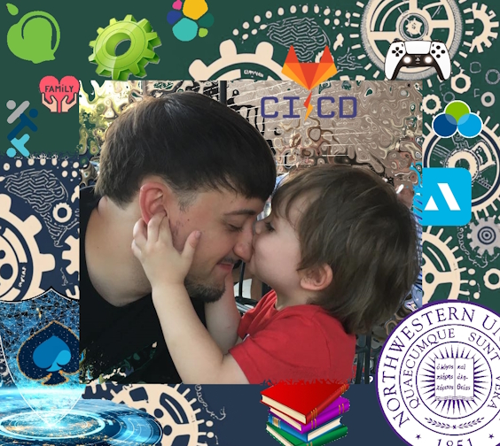
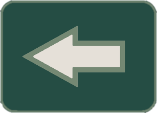

Throughout my career, I have built a reputation for solving complex technical challenges at the intersection of software engineering, automation, cybersecurity, and operations. My experience spans the full technology lifecycle, including application development, platform engineering, infrastructure automation, security operations, AI-enabled workflows, and large-scale system design.
As I progressed from software developer to senior cybersecurity engineer and technical lead, I was consistently entrusted with increasing levels of responsibility, not only for technology delivery but also for mentoring engineers, developing training programs, influencing strategic decisions, and leading critical initiatives. At Capgemini, I helped sustain and modernize business-critical MDR platforms, guided platform strategy, mentored junior engineers, and contributed to organizational growth during a period of significant operational challenge.
One of my greatest strengths is the ability to bridge disciplines that are often separated into different teams. I bring hands-on expertise in software development, security engineering, Linux administration, automation, CI/CD, and AI-driven solutions, enabling me to quickly understand complex environments and deliver practical, scalable results. Whether leading technical initiatives, developing innovative solutions, or empowering others through mentorship and training, I am passionate about building systems and teams that create lasting business value.
My career has been defined by a consistent progression from software developer to engineering leader, driven by a passion for solving difficult problems and creating lasting organizational impact. Over the past decade, I have successfully combined software engineering, cybersecurity, automation, platform operations, AI adoption, and technical leadership to deliver secure, scalable, and resilient solutions across multiple industries.
I have repeatedly been entrusted with high-visibility initiatives, including rescuing critical platforms, modernizing engineering practices, developing enterprise applications, leading security and automation programs, mentoring engineers, and shaping technical strategy. These experiences have allowed me to bridge the gap between engineering execution and business objectives while helping organizations improve efficiency, reduce risk, and accelerate innovation.
What differentiates me is not expertise in any single technology, but my versatility which enabled me to quickly master new domains, unite diverse technical disciplines, and build high-performing teams around a shared vision. I bring the mindset of an engineer, the adaptability of a problem solver, and the leadership qualities needed to guide organizations through increasingly complex technical challenges.
